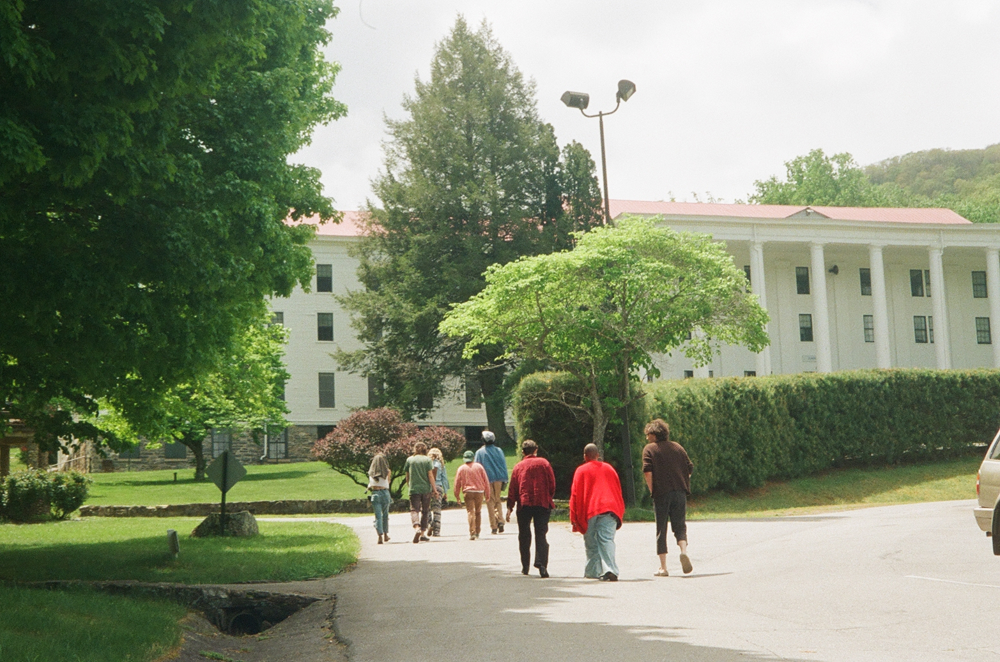
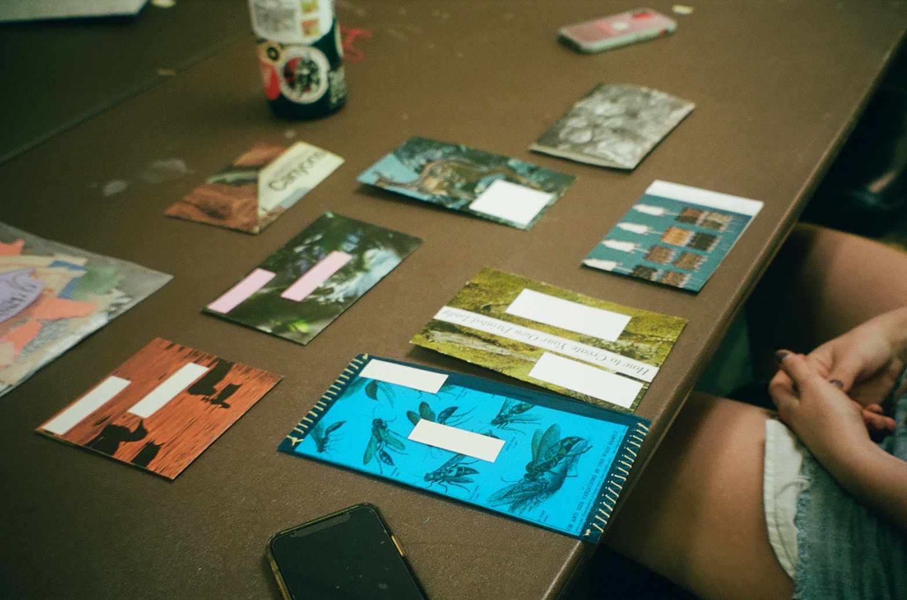
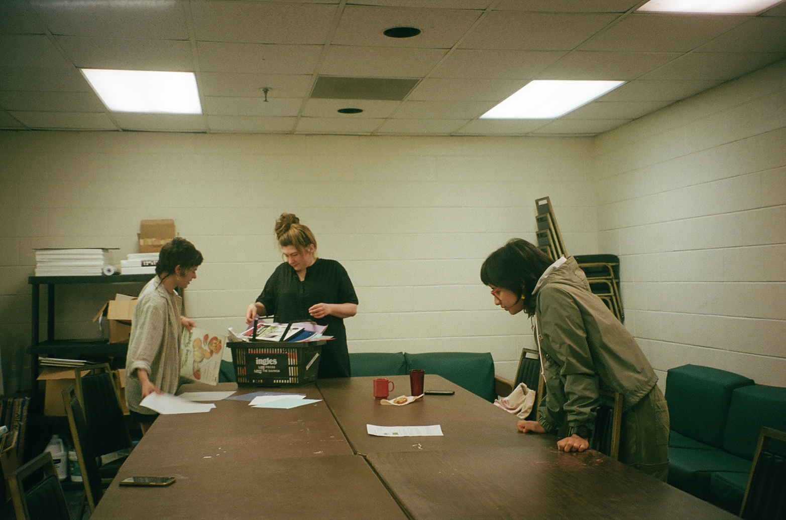
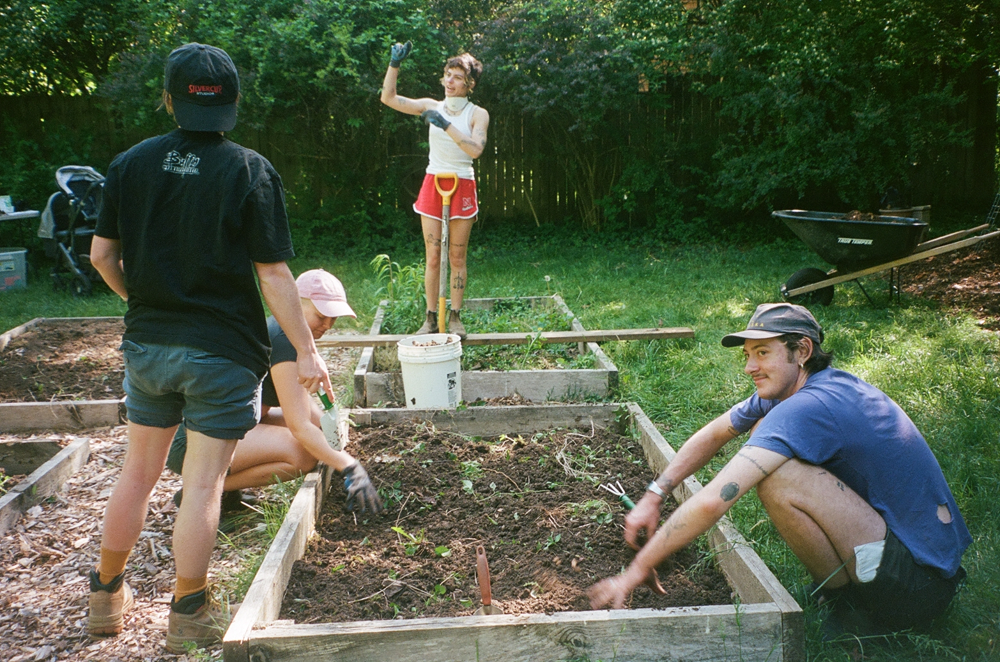
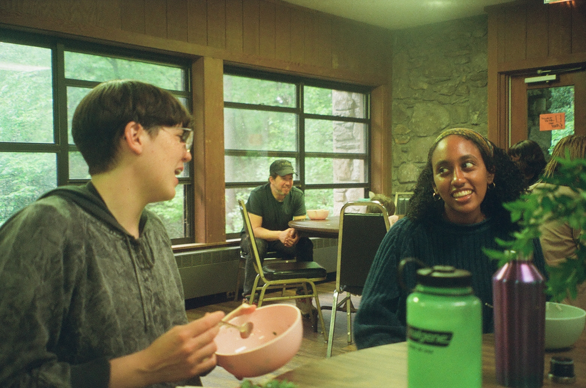
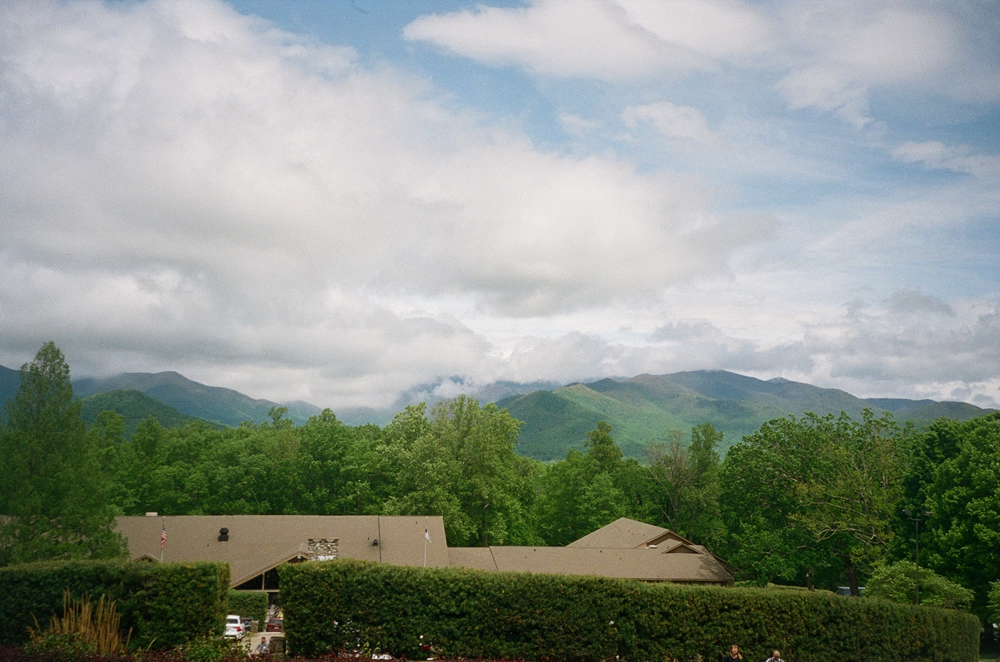
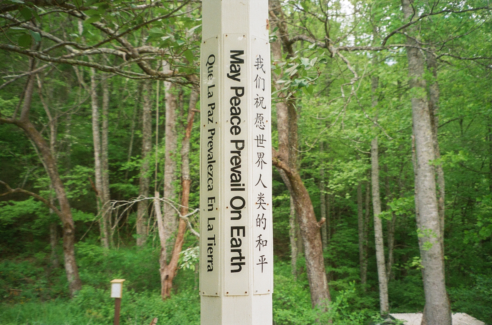
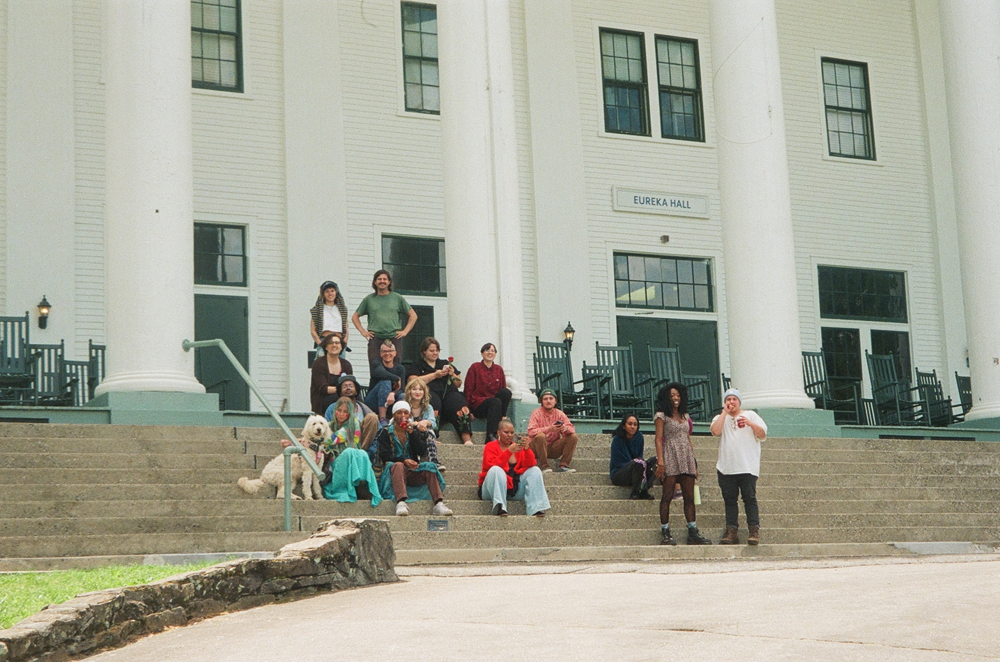

Experiments in Education
May 9 2022

"To understand life is to understand ourselves, and that is both the beginning and the end of education.” -Jiddu Krishnamurti
I just came back from Black Mountain yesterday.
My week was profoundly magical. I learned so much and loved so much in equal measures. I’d wanted to attend this program for quite some time and to actually get to experience it was pretty surreal.
I first learned about the school in 2017. I didn’t have the guts to apply till 2019 but because of the coding bootcamp I was attending at the time I wasn't able to go that year.
It's intimidating living and creating with people who are real life artists and have the credentials to back it up. I never went to art school. I don’t have any formal art training but I’ve always followed a non-traditional path, I guess.
The entire reason why I wanted to do this was so I could meet new people, to live in a community of other artists and to learn from them. But on my way up on the greyhound to the mountains I found another reason-- I needed a change. I've been dissatisfied with the way things are for a while, but I have no idea how to move forward.
It felt so liberating to not have to worry about work. I loved being in the art room (which ended up being my favorite spot) making art and conversation with friends. It felt like being back in kindergarten, everyone sitting around the table drawing, cutting, glueing at the same time, no hurry or care in the world. When else do adults get to do stuff like that?
When I close my eyes I can still see everyone in the artroom and I can’t wait for the chance to be back again, making things with my hands and laughing with friends.


I worked on so many things this week! For one project my roommate and I worked on an artist box, they did two sides of collage and I did two sides with crochet and embroidery. I also worked on: two landscape drawings; a weaving; a comic; a script; and a medium-scale marker drawing. I'd never normally get the time to be so prolific, so I knew I had to take advantage.
So much of the week was just experimenting— trying something new and seeing if it sticks. Which is so different from most forms of education where you don’t do something if you’re not sure or until you see someone else doing it. But I think that kind of education leaves us with a deficit of people who are willing to try things even when they might fail and make new inroads in areas that don’t even exist yet!
I’ve realized that education isn’t just about learning in a formal setting— it’s not just something you do for a degree, or something boring that you have to do all alone— it’s something you do all the time, that you do for fun, something you do together. I’ve realized that learning will happen anywhere where people intentionally gather, and where we are receptive to new skills. I feel like I prefer learning in community with others.


Another aspect of the school I really liked was the work service program. Our groups cycled through working in the garden or kitchen or doing “operations” for the community. Even though I didn’t know what I was doing, I liked collaborating with other people, and being exposed to new skills. It was so much fun making posters for people's classes, planting seeds, and helping make lunch for the rest of the community. I always felt excited to do things, even that I'd normally not like doing like cooking, because the people made it enjoyable
I have so much to say about this experience, so much, but somehow it feels bigger than I can describe.
For our activations I felt really self-conscious about sharing what I had worked on during the week. So I didn’t. Some people had made some really amazing things, it made me feel like what I had planned wasn’t good. A theme that I felt throughout the week was that I didn’t belong. And that night the point was painfully amplified. I’m not sure if I’ll return. I think it would be good for me, and I think I want to, but I don't know. Maybe that's just something I need to work on: Feeling like I belong anywhere.
Sometimes to find yourself you must become lost. No one knew what we were walking into when forty people decided to share a week and a lodge in the mountains in North Carolina, but somehow we managed to make something very precious and meaningful, something I don’t think I’ll ever be able to forget. I met some amazing people, learned so much, and made more art than I have in the past two years.
Today I didn’t make any art. But that’s okay. My big project since I came back has been organizing my room, building some furniture, cleaning my closet. I feel transformed but I don’t know how to convert emotion into action. I think this was the change I was looking for but I won’t know until I put one foot in front of the other...


